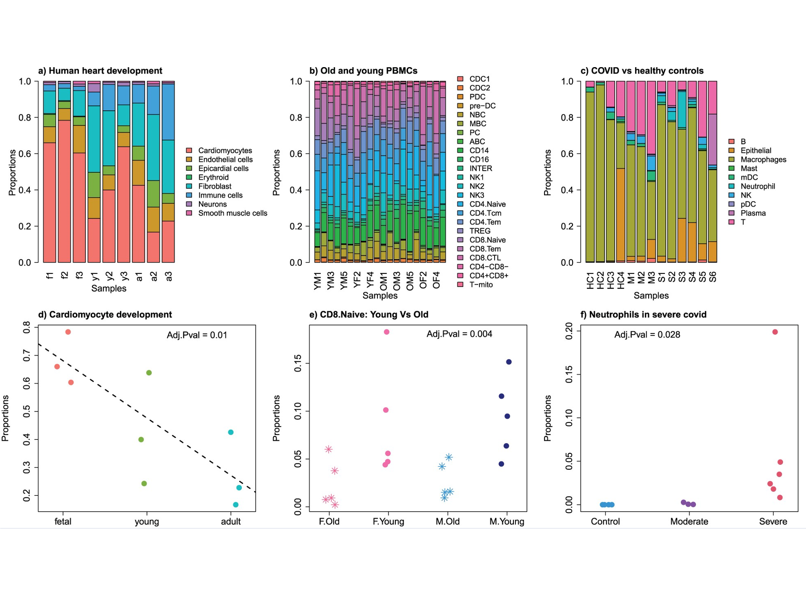
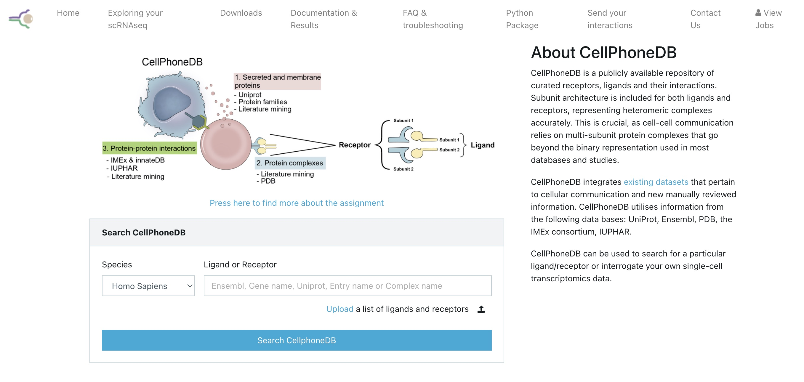
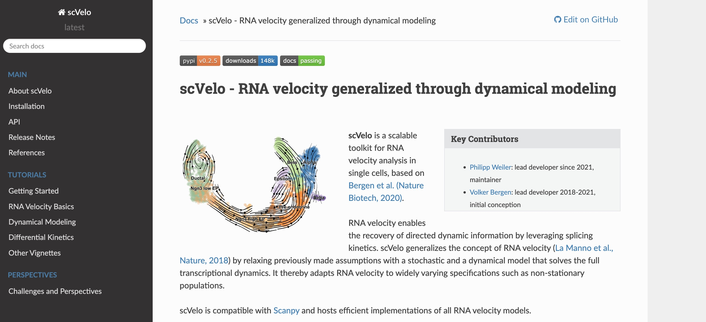
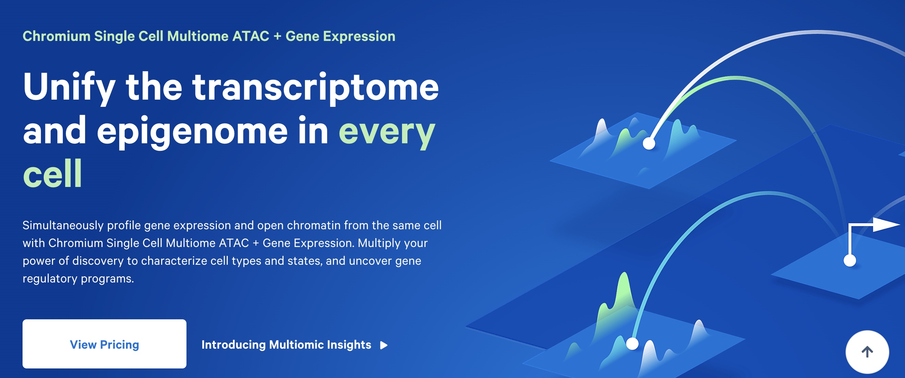
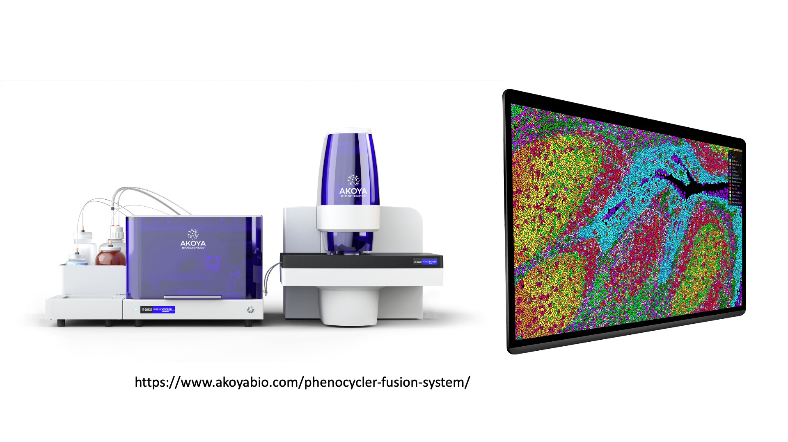
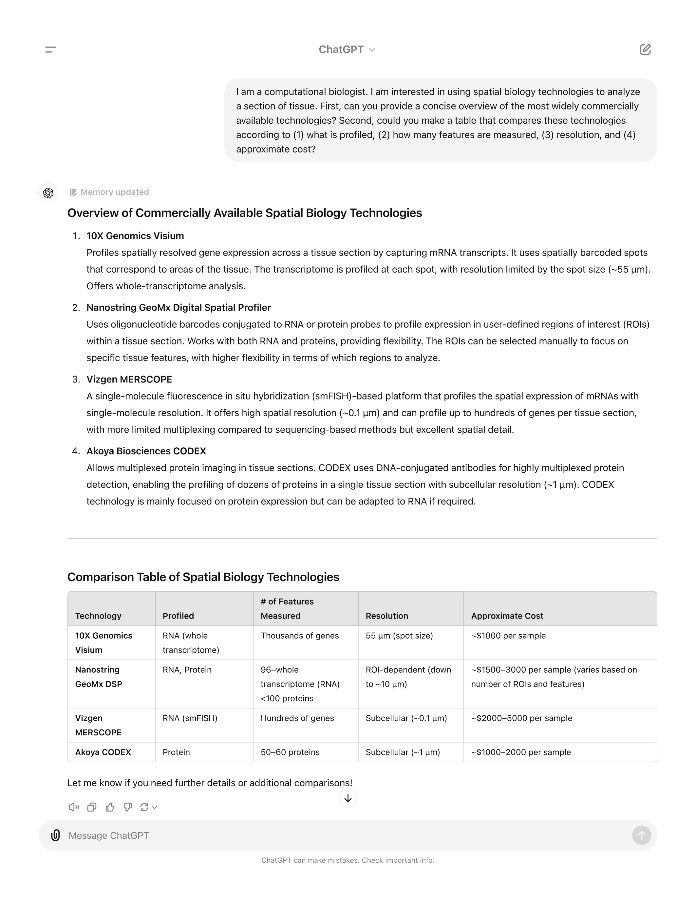

Future Directions
Overview
Teaching: 30 min
Exercises: 0 minQuestions
What are some important concepts from the single cell field that we did not have time to discuss in this course?
What are some interesting future research directions in areas related to single cell transcriptomics?
Objectives
Discuss some of the complexities of inferring cell composition from scRNA-Seq.
Explain what the concept of pseudotime is.
Be able to give an example of what could be learned from analyzing cell-cell communication.
Give examples of multimodal cell profiling and how it could help you understand a biological system.
List examples of spatial profiling technologies that are beginning to become more widely available.
Topics not covered in detail in this course
There are a number of important topics in the field of single cell analysis that we have not had the time to cover in this course. In this lesson we will give a brief overview of some of these topics. We hope to give you enough of a background to begin your own research. We will point you to one or a few resources or references that we feel are useful within the section on each topic.
Differences in cell composition
Single cell transcriptomics is a very powerful method for identifying differences in tissue cell composition. This sort of question was usually addressed using methods like flow cytometry in the past, but flow cytometry requires knowing what you want to look for before you can quantify it. In scRNA-Seq we can take an entirely unbiased view of cell composition, and we can define cell subsets with more subtle changes in gene expression as opposed to only looking at broad classes of cell types with “On/Off” changes in cell surface receptor protein expression.
Nevertheless, there are many complexities to understanding tissue cell composition using scRNA-Seq. Typically we quantify on the order of thousands of cells per biological specimen in scRNA-Seq. Therefore, quantification of cell types can be subject to significant variability due to statistical sampling alone, especially for rare cell types. Moreover, it is possible – and maybe even likely – that cell types are variably susceptible to lysis or death during the cell preparation process. Finally, there are difficulties that are largely mathematical in nature. Tissue cell composition measurements are inherently composed of a number of different cell types that sum up to the whole tissue. When one cell type decreases in abundance, other cell types must increase (at least on a relative basis). This type of data is called compositional data and requires special transformations in order to model changes in a statistically rigorous manner.
Most single cell investigators use simple methods to look at changes in cell composition such as ANOVA or t-tests. The propeller method is a nice and simple option and available in an easy-to-use R package. This figure is taken from Phipson et al 2022 and shows an example of applying propeller to several different datasets: 
scCODA is a more complicated approach that uses a Bayesian model incorporating the compositional nature of the data. While the scCODA model is impressively comprehensive and rigorous, the software is more difficult to run and the output more difficult to interpret.
Cell-cell communication
An analysis of possible cell-cell communication is one output that can be inferred from scRNA-Seq data. The basic idea is that we can use databases of known receptor-ligand interactions in order to predict cells that interact. Specifically, if cell type A expresses ligand X, and cell type B expresses the cognate receptor for ligand X, we can infer the possibility of communication between these two cell types. Of course scRNA-Seq data is not telling us whether that receptor-ligand link is actually active at any particular moment in time, but it may be useful to understand which cells are communicating most/least and how lines of communication change in, say, a drug-treated vs control condition.
Many groups have developed analytical methods and tools for exploring the cell-cell communication landscape. The best tools are able to draw on large databases of receptor-ligand interactions and to properly consider interactions that involve multiple subunit receptor-ligand complexes. One major tool for carrying out analysis of cell-cell communication is CellPhoneDB published by Efremova et al. 2020. This tool is widely used and has a web portal as well as a python package: 
Another option is CellChat,
published by
Jin et al. 2021
and updated recently in a
preprint
and a published protocol.
This method has an accompanying R package and an easy-to-use
standalone Shiny app here.
Pseudotime and RNA velocity
Cells of various types differentiate from progenitor cells in ways that are as diverse as the cells themselves. Moreover, cells can change state – for example, in response to external cues. When cells transit between developmental or functional states, the cell’s transcriptome is altered as some genes are turned on and others are turned off. In many cases the precise ordering of these intermediate changes is difficult or impossible to study as the cells cannot be cleanly isolated. However, profiling a collection of cells that is changing state using scRNA-Seq can address this problem. Such a collection will have cells at different stages of the change in state. If we can reconstruct the “transcriptional trajectory” connecting states, it will allow us to better understand the transition.
Pseudotime is the position of a cell along such a trajectory. Pseudotime is not necessarily equivalent to some real timescale, but rather is “a latent (unobserved) dimension which measures the cells’ progress through [a cellular] transition” Reid and Wernisch 2016. Monocle is the software package that introduced the concept of pseudotime and popularized the use of algorithms for reconstructing cellular trajectories using scRNA-Seq. As the Monocle documentation puts it:
Monocle uses an algorithm to learn the sequence of gene expression changes each cell must go through as part of a dynamic biological process. Once it has learned the overall “trajectory” of gene expression changes, Monocle can place each cell at its proper position in the trajectory. You can then use Monocle’s differential analysis toolkit to find genes regulated over the course of the trajectory … If there are multiple outcomes for the process, Monocle will reconstruct a “branched” trajectory. These branches correspond to cellular “decisions”, and Monocle provides powerful tools for identifying the genes affected by them and involved in making them.
In addition to Monocle there are many, many algorithms and software packages for inferring pseudotime. For a very nice list check out Anthony Gitter’s github list.
A very clever technique that is somewhat related to pseudotime is called RNA velocity. RNA velocity was introcduced by La Manno et al. 2018. They defined RNA velocity as the time derivative of a cell’s gene expression state. RNA velocity uses the ratio of unspliced versus spliced RNAs in a cell to estimate whether a gene’s expression is currently increasing (unspliced > spliced) or decreasing (spliced > unspliced). scvelo is a beautifully engineered toolkit that generalizes RNA velocity by relaxing previous model assumptions with a stochastic and a dynamical model that solves the full transcriptional dynamics. See Bergen et al. 2020 for more details. 
Pseudotime/trajectory analysis and RNA velocity are related but distinct methods. Trajectory analysis attempts to build a continuous transcriptional gradient representing a path between groups of cells, but does not automatically infer a direction. In contrast, RNA velocity also deals with transitions between cellular states, but explicitly considers the directionality of the transitions.
Multimodal molecular profiling
An important area of future inquiry in the single cell arena is the extension to so-called multi-modal profiling. This simply means profiling cells using not just transcriptomics, but via multiple data modalities. Some common examples of multimodal profiling include:
- single cell transcriptomics + single nucleus ATAC-Seq (chromatin accessibility)
- single cell transcriptomics + single cell surface protein quantification (CITE-Seq)
- single cell transcriptomics + immune repertoire profiling

(Image courtesy of 10X Genomics webpage)
Some of these approaches provide multiple modes of data from the same biological specimen but different individual cells, while others collect data from the same individual cells. Obviously, all else equal, the latter approach is preferred when it is possible. For example, the 10X “Multiome” product obtains chromatin accessibility and gene expression on every cell, which provides a more detailed portrait of how changes in chromatin perturb gene expression compared to having paired chromatin accessibility and gene expression data on different sets of cells.
There is already a large literature on these topics. Zhu et al. 2020 wrote a nice commentary piece discussing methods and tools available for multimodel analysis in single cell genomics Hao et al 2021 published a landmark paper that developed methods for integrating across different data modalities and implementing these methods in version 4 of the Seurat package.
Fixed cell profiling options and probe-based methods
In recent years it has become possible to profile the transcriptome of fixed single cells. The most widely used product for fixed cell profiling is 10X Genomics’ FLEX, which allows the profiling of RNA from preserved (fixed) tissues. FLEX uses specialized chemistry to reverse cross-linking in formaldehyde-fixed samples, enabling efficient RNA capture while preserving spatial and cellular context. This opens the door to studying archived samples as well as offering flexibility in experimental design. Such approaches may be particularly useful for retrospective studies and clinical samples, where immediate processing is not possible.
The FLEX product uses a probe-based system to assay gene expression. More broadly, there has recently been a growing interest in probe-based methods for transcriptome profiling. This shift is partly due to several advantages of this approach:
- Target specificity: Probes provide precise targeting of specific genes or regions of interest, enhancing sensitivity and signal-to-noise ratio.
- Cost efficiency: Probe-based approaches can be less expensive for targeted panels compared to whole transcriptome sequencing, especially for large-scale studies.
- Compatibility with degraded samples: As alluded to above, probe-based profiling can perform well with formalin-fixed paraffin-embedded (FFPE) tissues.
Spatial profiling
Spatial profiling methods are an interesting and rapidly growing area of research and technology. These approaches are not always truly single cell biology and in many cases blend the ethos of single cell genomics with approaches traditionally used in fields like pathology. Nevertheless we mention them here because these technologies are revealing previously inaccessible information about the molecular properties of cells in their native tissue context, and the future holds promise for increasingly more accurate and powerful technologies.
10X Genomics offers the Visium platform. The original Visium protocol profiles a slice of tissue that is 6.5mm square using 5,000 spots each 50um in diameter. These spots are large enough that they are not truly single cell, rather each spot typically captures between 1-10 cells. Thus in some ways the data from each spot can be thought of as a “mini” bulk RNA-Seq. Nevertheless it can be very useful to assay gene expression in this spatially resolved manner. More recently 10X has released the Visium HD product which profiles tissues of the same size (6.5mm square) but across millions of 2um square spots with no gaps, achieving true single cell resolution.
10X also offers the Xenium In Situ platform which can profile up to 5,000 RNA targets with subcellular resolution.
Another spatial profiling option is Nanostring’s GeoMx Digital Spatial Profiler. This is a high-plex protein and RNA platform that uses indexing oligonucleotides assigned to targets of interest. This allows measuring hundreds of potential protein and RNA biomarkers. A new Nanostring product is CosMx which can profile at subcellular resolution (while GeoMx profiles with coarser resolution – groups of cells).
A final spatial profiling option is the PhenoCycler system from Akoya Biosciences. This system (formerly known as CODEX) is a commercial implementation of a device that was pioneered in an academic lab (protocol reviewed in ref). The system allows profiling of millions of cells across a whole slide with single-cell resolution. This system originally profiled dozens of proteins but has expanded to include the capability to capture 100+ protein and RNA biomarkers. 
(Images courtesy of Akoya Biosciences webpage)
For each of these instruments tissue can be prepared in a variety of ways. In many cases the techology is moving towards profiling of Formalin-Fixed Paraffin-Embedded (FFPE) samples. The technological landscape is sure to change quickly and the future is bright for spatial profiling!
As you can see above, the landscape is complex. Getting help from AI can be a fun and informative way to learn more about your choices, including familiarizing yourself with the specific properties of each method and the tradeoffs you must weigh. Here is an example of the type of inquiry we have found useful: 
Key Points
There exists a rich suite of concepts and methods for working with scRNA-Seq data that goes beyond cell type identification and into inference about how cells are changing and interacting with each other.
Multimodal datasets and spatially resolved technologies will be key to future inquiry in single cell and related fields.